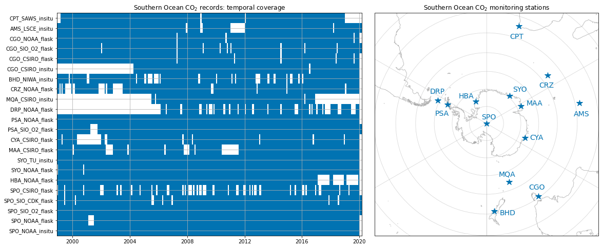
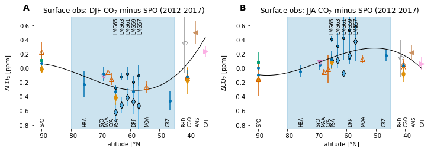

Surface observations¶
%load_ext autoreload
%autoreload 2
import numpy as np
import matplotlib.pyplot as plt
import matplotlib.gridspec as gridspec
from matplotlib.colors import ListedColormap
import matplotlib.path as mpath
import seaborn as sns
import cartopy.crs as ccrs
import figure_panels
import obs_surface
import util
Available records¶
Station information¶
stninfo = obs_surface.get_stn_info('CO2')
stninfo
| lat | lon | alt | stn | type | institution | constituent | |
|---|---|---|---|---|---|---|---|
| SPO_Multi_med3_CO2 | -89.98 | -24.8 | 2810 | SPO | aggregate | Multiple | CO2 |
| SPO_Multi_median_CO2 | -89.98 | -24.8 | 2810 | SPO | aggregate | Multiple | CO2 |
| SPO_NOAA_insitu_CO2 | -89.98 | -24.8 | 2810 | SPO | in situ | NOAA | CO2 |
| SPO_NOAA_flask_CO2 | -89.98 | -24.8 | 2810 | SPO | flask | NOAA | CO2 |
| SPO_SIO_O2_flask_CO2 | -89.98 | -24.8 | 2810 | SPO | flask | SIO_O2 | CO2 |
| SPO_SIO_CDK_flask_CO2 | -89.98 | -24.8 | 2810 | SPO | flask | SIO_CDK | CO2 |
| SPO_CSIRO_flask_CO2 | -89.98 | -24.8 | 2810 | SPO | flask | CSIRO | CO2 |
| HBA_NOAA_flask_CO2 | -75.605 | -26.21 | 10 | HBA | flask | NOAA | CO2 |
| SYO_NOAA_flask_CO2 | -69.0125 | 39.59 | 14 | SYO | flask | NOAA | CO2 |
| SYO_TU_insitu_CO2 | -69.0125 | 39.59 | 14 | SYO | in situ | TU/NIPR | CO2 |
| MAA_CSIRO_flask_CO2 | -67.617 | 62.867 | 32 | MAA | flask | CSIRO | CO2 |
| CYA_CSIRO_flask_CO2 | -66.283 | 110.517 | 47 | CYA | flask | CSIRO | CO2 |
| PSA_NOAA_flask_CO2 | -64.9 | -64 | 10 | PSA | flask | NOAA | CO2 |
| PSA_SIO_O2_flask_CO2 | -64.9 | -64 | 10 | PSA | flask | SIO_O2 | CO2 |
| DRP_NOAA_flask_CO2 | -59 | -64.69 | 10 | DRP | flask | NOAA | CO2 |
| MQA_CSIRO_flask_CO2 | -54.483 | 158.967 | 6 | MQA | flask | CSIRO | CO2 |
| MQA_CSIRO_insitu_CO2 | -54.483 | 158.967 | 6 | MQA | in situ | CSIRO | CO2 |
| CRZ_NOAA_flask_CO2 | -46.4337 | 51.8478 | 197 | CRZ | flask | NOAA | CO2 |
| CGO_NOAA_flask_CO2 | -40.683 | 144.69 | 94 | CGO | flask | NOAA | CO2 |
| CGO_SIO_O2_flask_CO2 | -40.683 | 144.69 | 94 | CGO | flask | SIO_O2 | CO2 |
| CGO_CSIRO_flask_CO2 | -40.683 | 144.69 | 94 | CGO | flask | CSIRO | CO2 |
| CGO_CSIRO_insitu_CO2 | -40.683 | 144.69 | 94 | CGO | in situ | CSIRO | CO2 |
| AMS_LSCE_insitu_CO2 | -37.7983 | 77.5378 | 55 | AMS | in situ | LSCE | CO2 |
| CPT_SAWS_insitu_CO2 | -34.3523 | 18.4891 | 230 | CPT | in situ | SAWS | CO2 |
| BHD_NIWA_insitu_CO2 | -41.4083 | 174.871 | 85 | BHD | NaN | NIWA | CO2 |
| LMG65_NOAA_underway_CO2 | -65 | -63.55 | 10 | LMG65 | NaN | NOAA | CO2 |
| LMG63_NOAA_underway_CO2 | -63 | -61.7 | 10 | LMG63 | NaN | NOAA | CO2 |
| LMG61_NOAA_underway_CO2 | -61 | -62 | 10 | LMG61 | NaN | NOAA | CO2 |
| LMG59_NOAA_underway_CO2 | -59 | -63.37 | 10 | LMG59 | NaN | NOAA | CO2 |
| LMG57_NOAA_underway_CO2 | -57 | -64.23 | 10 | LMG57 | NaN | NOAA | CO2 |
| LMG65_NCAR_underway_CO2 | -65 | -68.58 | 10 | LMG65 | NaN | NCAR | CO2 |
| LMG63_NCAR_underway_CO2 | -63 | -68.58 | 10 | LMG63 | NaN | NCAR | CO2 |
| LMG61_NCAR_underway_CO2 | -61 | -68.58 | 10 | LMG61 | NaN | NCAR | CO2 |
| LMG59_NCAR_underway_CO2 | -59 | -68.58 | 10 | LMG59 | NaN | NCAR | CO2 |
| LMG57_NCAR_underway_CO2 | -57 | -68.58 | 10 | LMG57 | NaN | NCAR | CO2 |
CO2 observations dataset¶
data_array = obs_surface.open_surface_data_obs('CO2')
data_array
<xarray.DataArray 'CO2' (time: 255, record: 32)>
array([[365.087 , 365.13 , 365.0911, ..., 364.925 , 364.613 , nan],
[365.0233, 365.1871, 365.0878, ..., 364.9575, 364.6776, nan],
[364.9477, 365.042 , 364.9615, ..., 365.09 , 364.9108, nan],
...,
[408.8532, 408.9975, 408.8587, ..., 408.5017, 408.8434, nan],
[ nan, nan, 408.7141, ..., nan, 408.949 , nan],
[ nan, nan, 408.3551, ..., nan, 408.8221, nan]])
Coordinates:
* time (time) datetime64[ns] 1998-12-15 1999-01-15 ... 2020-02-14
year_frac (time) float64 1.999e+03 1.999e+03 ... 2.02e+03 2.02e+03
* record (record) object 'SPO_NOAA_insitu_CO2' ... 'CPT_SAWS_insitu_CO2'
institution (record) object 'NOAA' 'NOAA' 'SIO_O2' ... 'NOAA' 'LSCE' 'SAWS'
lat (record) float64 -89.98 -89.98 -89.98 ... -40.68 -37.8 -34.35
lon (record) float64 -24.8 -24.8 -24.8 -24.8 ... 144.7 77.54 18.49
stncode (record) object 'SPO' 'SPO' 'SPO' 'SPO' ... 'CGO' 'AMS' 'CPT'
Attributes:
long_name: CO$_2$
units: ppmxarray.DataArray
'CO2'
- time: 255
- record: 32
- 365.1 365.1 365.1 365.0 nan 365.0 nan ... nan nan 408.2 nan 408.8 nan
array([[365.087 , 365.13 , 365.0911, ..., 364.925 , 364.613 , nan], [365.0233, 365.1871, 365.0878, ..., 364.9575, 364.6776, nan], [364.9477, 365.042 , 364.9615, ..., 365.09 , 364.9108, nan], ..., [408.8532, 408.9975, 408.8587, ..., 408.5017, 408.8434, nan], [ nan, nan, 408.7141, ..., nan, 408.949 , nan], [ nan, nan, 408.3551, ..., nan, 408.8221, nan]]) - time(time)datetime64[ns]1998-12-15 ... 2020-02-14
array(['1998-12-15T00:00:00.000000000', '1999-01-15T00:00:00.000000000', '1999-02-14T00:00:00.000000000', ..., '2019-12-15T00:00:00.000000000', '2020-01-15T00:00:00.000000000', '2020-02-14T00:00:00.000000000'], dtype='datetime64[ns]') - year_frac(time)float641.999e+03 1.999e+03 ... 2.02e+03
array([1998.95616438, 1999.04109589, 1999.12328767, 1999.20273973, 1999.28767123, 1999.36986301, 1999.45479452, 1999.5369863 , 1999.62191781, 1999.70684932, 1999.7890411 , 1999.8739726 , 1999.95616438, 2000.04098361, 2000.12295082, 2000.20491803, 2000.28961749, 2000.3715847 , 2000.45628415, 2000.53825137, 2000.62295082, 2000.70765027, 2000.78961749, 2000.87431694, 2000.95628415, 2001.04109589, 2001.12328767, 2001.20273973, 2001.28767123, 2001.36986301, 2001.45479452, 2001.5369863 , 2001.62191781, 2001.70684932, 2001.7890411 , 2001.8739726 , 2001.95616438, 2002.04109589, 2002.12328767, 2002.20273973, 2002.28767123, 2002.36986301, 2002.45479452, 2002.5369863 , 2002.62191781, 2002.70684932, 2002.7890411 , 2002.8739726 , 2002.95616438, 2003.04109589, 2003.12328767, 2003.20273973, 2003.28767123, 2003.36986301, 2003.45479452, 2003.5369863 , 2003.62191781, 2003.70684932, 2003.7890411 , 2003.8739726 , 2003.95616438, 2004.04098361, 2004.12295082, 2004.20491803, 2004.28961749, 2004.3715847 , 2004.45628415, 2004.53825137, 2004.62295082, 2004.70765027, 2004.78961749, 2004.87431694, 2004.95628415, 2005.04109589, 2005.12328767, 2005.20273973, 2005.28767123, 2005.36986301, 2005.45479452, 2005.5369863 , ... 2013.62191781, 2013.70684932, 2013.7890411 , 2013.8739726 , 2013.95616438, 2014.04109589, 2014.12328767, 2014.20273973, 2014.28767123, 2014.36986301, 2014.45479452, 2014.5369863 , 2014.62191781, 2014.70684932, 2014.7890411 , 2014.8739726 , 2014.95616438, 2015.04109589, 2015.12328767, 2015.20273973, 2015.28767123, 2015.36986301, 2015.45479452, 2015.5369863 , 2015.62191781, 2015.70684932, 2015.7890411 , 2015.8739726 , 2015.95616438, 2016.04098361, 2016.12295082, 2016.20491803, 2016.28961749, 2016.3715847 , 2016.45628415, 2016.53825137, 2016.62295082, 2016.70765027, 2016.78961749, 2016.87431694, 2016.95628415, 2017.04109589, 2017.12328767, 2017.20273973, 2017.28767123, 2017.36986301, 2017.45479452, 2017.5369863 , 2017.62191781, 2017.70684932, 2017.7890411 , 2017.8739726 , 2017.95616438, 2018.04109589, 2018.12328767, 2018.20273973, 2018.28767123, 2018.36986301, 2018.45479452, 2018.5369863 , 2018.62191781, 2018.70684932, 2018.7890411 , 2018.8739726 , 2018.95616438, 2019.04109589, 2019.12328767, 2019.20273973, 2019.28767123, 2019.36986301, 2019.45479452, 2019.5369863 , 2019.62191781, 2019.70684932, 2019.7890411 , 2019.8739726 , 2019.95616438, 2020.04098361, 2020.12295082]) - record(record)object'SPO_NOAA_insitu_CO2' ... 'CPT_S...
array(['SPO_NOAA_insitu_CO2', 'SPO_NOAA_flask_CO2', 'SPO_SIO_O2_flask_CO2', 'SPO_SIO_CDK_flask_CO2', 'SPO_CSIRO_flask_CO2', 'HBA_NOAA_flask_CO2', 'SYO_NOAA_flask_CO2', 'SYO_TU_insitu_CO2', 'MAA_CSIRO_flask_CO2', 'CYA_CSIRO_flask_CO2', 'LMG65_NCAR_underway_CO2', 'LMG65_NOAA_underway_CO2', 'PSA_SIO_O2_flask_CO2', 'PSA_NOAA_flask_CO2', 'LMG63_NCAR_underway_CO2', 'LMG63_NOAA_underway_CO2', 'LMG61_NCAR_underway_CO2', 'LMG61_NOAA_underway_CO2', 'DRP_NOAA_flask_CO2', 'LMG59_NCAR_underway_CO2', 'LMG59_NOAA_underway_CO2', 'LMG57_NOAA_underway_CO2', 'LMG57_NCAR_underway_CO2', 'MQA_CSIRO_insitu_CO2', 'CRZ_NOAA_flask_CO2', 'BHD_NIWA_insitu_CO2', 'CGO_CSIRO_insitu_CO2', 'CGO_CSIRO_flask_CO2', 'CGO_SIO_O2_flask_CO2', 'CGO_NOAA_flask_CO2', 'AMS_LSCE_insitu_CO2', 'CPT_SAWS_insitu_CO2'], dtype=object) - institution(record)object'NOAA' 'NOAA' ... 'LSCE' 'SAWS'
array(['NOAA', 'NOAA', 'SIO_O2', 'SIO_CDK', 'CSIRO', 'NOAA', 'NOAA', 'TU/NIPR', 'CSIRO', 'CSIRO', 'NCAR', 'NOAA', 'SIO_O2', 'NOAA', 'NCAR', 'NOAA', 'NCAR', 'NOAA', 'NOAA', 'NCAR', 'NOAA', 'NOAA', 'NCAR', 'CSIRO', 'NOAA', 'NIWA', 'CSIRO', 'CSIRO', 'SIO_O2', 'NOAA', 'LSCE', 'SAWS'], dtype=object) - lat(record)float64-89.98 -89.98 ... -37.8 -34.35
array([-89.98 , -89.98 , -89.98 , -89.98 , -89.98 , -75.605 , -69.0125, -69.0125, -67.617 , -66.283 , -65. , -65. , -64.9 , -64.9 , -63. , -63. , -61. , -61. , -59. , -59. , -59. , -57. , -57. , -54.483 , -46.4337, -41.4083, -40.683 , -40.683 , -40.683 , -40.683 , -37.7983, -34.3523]) - lon(record)float64-24.8 -24.8 -24.8 ... 77.54 18.49
array([-24.8 , -24.8 , -24.8 , -24.8 , -24.8 , -26.21 , 39.59 , 39.59 , 62.867 , 110.517 , -68.58 , -63.55 , -64. , -64. , -68.58 , -61.7 , -68.58 , -62. , -64.69 , -68.58 , -63.37 , -64.23 , -68.58 , 158.967 , 51.8478, 174.871 , 144.69 , 144.69 , 144.69 , 144.69 , 77.5378, 18.4891]) - stncode(record)object'SPO' 'SPO' 'SPO' ... 'AMS' 'CPT'
array(['SPO', 'SPO', 'SPO', 'SPO', 'SPO', 'HBA', 'SYO', 'SYO', 'MAA', 'CYA', 'LMG65', 'LMG65', 'PSA', 'PSA', 'LMG63', 'LMG63', 'LMG61', 'LMG61', 'DRP', 'LMG59', 'LMG59', 'LMG57', 'LMG57', 'MQA', 'CRZ', 'BHD', 'CGO', 'CGO', 'CGO', 'CGO', 'AMS', 'CPT'], dtype=object)
- long_name :
- CO$_2$
- units :
- ppm
Temporal coverage¶
def right_bnd(y, m):
if m == 12:
return y+1, 1
else:
return y, m + 1
fig = plt.figure(figsize=(15, 8))
gsL = gridspec.GridSpec(
nrows=1, ncols=1,
left=0, right=0.55,
wspace=0.05, hspace=0.01,
)
gsR = gridspec.GridSpec(
nrows=1, ncols=1,
left=0.55, right=1,
wspace=0.05, hspace=0.01,
)
axs = []
records = [r for r in data_array.record.values if 'Multi' not in r and 'LMG' not in r]
da = data_array.sel(record=records)
year, mon, day = util.datetime64_parts(da.time)
year_last, mon_last = right_bnd(year[-1], mon[-1])
year = np.concatenate((year, [year_last]))
mon = np.concatenate((mon, [mon_last]))
time = [np.datetime64(f'{y:04d}-{m:02d}-01') for y, m in zip(year, mon)] + []
ax = fig.add_subplot(gsL[0, 0])
axs.append(ax)
cmap = ListedColormap(sns.color_palette(figure_panels.sns_palette, 1).as_hex()[::-1])
ax.pcolormesh(
time,
np.arange(0, len(da.record)+1, 1),
np.where(np.isnan(da), np.nan, 1).T,
cmap=cmap,
shading='flat',
)
ax.set_yticks(np.arange(0, len(da.record), 1)+0.5);
ax.set_yticklabels(['_'.join(s.split('_')[:-1]) for s in da.record.values]);
ax.grid(True)
ax.grid(True, axis='x', which='minor')
ax.set_title('Southern Ocean CO$_2$ records: temporal coverage')
ax = fig.add_subplot(gsR[0, 0], projection=ccrs.SouthPolarStereo())
axs.append(ax)
ax.set_extent([180, -180, -90, -30], crs=ccrs.PlateCarree())
# Compute a circle in axes coordinates, which we can use as a boundary
# for the map. We can pan/zoom as much as we like - the boundary will be
# permanently circular.
theta = np.linspace(0, 2*np.pi, 100)
center, radius = [0.5, 0.5], 0.5
verts = np.vstack([np.sin(theta), np.cos(theta)]).T
circle = mpath.Path(verts * radius + center)
#ax.set_boundary(circle, transform=ax.transAxes)
ax.coastlines('50m', color='gray', alpha=0.5)
ax.gridlines(alpha=0.5)
ax.set_title('Southern Ocean CO$_2$ monitoring stations')
util.label_stations(ax, stninfo.loc[records], fontsize=14,
color=sns.color_palette(figure_panels.sns_palette, 2).as_hex()[0],
)
util.savefig('station-coverage')

Comparison with shipboard data from the L. M. Gould¶
reference_records = obs_surface.reference_records['CO2']
reference = data_array.sel(record=reference_records).mean('record')
data_a = data_array - reference
ds = data_a.to_dataset().sel(time=slice('2012-06', '2017-11'))
ds_lmg_djf = util.ann_mean(ds, season='DJF', time_bnds_varname=None)
ds_lmg_jja = util.ann_mean(ds, season='JJA', time_bnds_varname=None)
fig, axs = util.canvas(1, 2, figsize=(6, 3.5))
figure_panels.stn_v_lat(ds_lmg_djf.CO2, axs[0, 0], include_LMG=True)
axs[0, 0].set_title(f'Surface obs: DJF CO$_2$ minus SPO (2012-2017)')
axs[0, 0].set_ylim([-0.85, 0.73])
figure_panels.stn_v_lat(ds_lmg_jja.CO2, axs[0, 1], include_LMG=True)
axs[0, 1].set_title(f'Surface obs: JJA CO$_2$ minus SPO (2012-2017)')
axs[0, 1].set_ylim([-0.85, 0.73])
util.label_plots(fig, [ax for ax in axs.ravel()], xoff=-0.02, yoff=0.04)
util.savefig('LMG-data')
